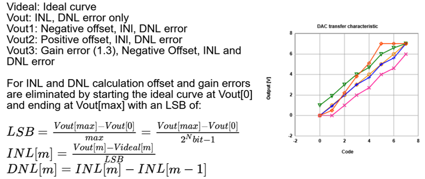

INL, DNL measurement in NodeEEBench.html
Jörg Vollrath, University of Applied Science Kempten, Germany, Joerg.vollrath@hs-kempten.de
August, 2025

Figure: Example 3-Bit data converter transfer characteristics with error
[
Data converter INL and DNL Error ]
Overview
Data converters convert NBit digital codes into analog voltage
or analog voltages into difgital codes. Normally only positive voltages with positive
digital codes are used. Negative voltages are generated or received by an active analog
operational amplifier circuit.
Data converters can have an offset error, a gain error, INL and DNL errors.
INL and DNL calculate relative code and step size errrors.
NodeEEBench.html provides supplied data converter code and measured data converter code and can directly measure error.
ADC and DAC error can be measured by replacing the provided ADC or DAC with the DUT.
As an example a simple R2R DAC will be used. Arduino measurements will be done with C4 AD2 PMOD and C2.
A triangle waveform is used to minimize settling time errors.
Measurement is source synchronous, so no jitter will be measured.
Due to the limited buffer size multiple measurements are needed.
To Do List
- Check FPGA second half of lookup table
- Check FPGA, Simulation operation
- Implement Simulation DAC manipulation: Noise, systematic error
- Check implemented status
Done List
- Tested Arduino ramp test, lookup buffer, sine with 8-Bit R2R with some error
- Lookup table tab using 'lBufVal'
- Lookup table generation using 'lBufVal' done
- Using and setting 'oBufVal' (lookup buffer size) for the different boards
- Arduino: 8-Bit R2R DAC with voltage divider (3.3V..1V), start 0, step 16, stop 4096 shows correct INL, DNL
- Limit buffer size depending on board done
- user interface with start, stop, step values and Lookup table calculation is provided.
- Setting 'lbufVal' (lookup buffer size) for the different boards
|
|
Task
All voltages or codes for the data converter have to be generated.
Due to the limited buffer size of the oscilloscope multiple measurements are used.
The user can select the measurement with 'step','start','end' values.
From the measurement of ideal and real codes INL, DNL are calculated and displayed in charts
A lookup table can be calculated to minimze the error.
Implementation (NEEBench.html)
There is a HTML and later JavaScript section with INL, DNL functions
according to the sequence of tabs.
The function 'rOp()' activates 'generateRamp()' for initialization of the measurement.
The correct trigger and time base is needed.
All measurement steps are done by 'generateRampX()' where the AWG is operated and a
'U' command for measurement is initiated.
The function 'nextRamp()' is controlling the loop after successfull data acquisition
if the INL,DNL test is active. The measured data are transfered to an 'oscObj' array.
At the end of the loop the function 'ramp()' is started.
function rOp('Run'); // 'Run','Stop'
function generateRamp(); // activated with Run
function generateRampX(); // activated with generateRamp
'codesStart', 'codesStop', 'codesEnd'
"lBufVal" // Lookup buffer size
'cLook' // checkbox lookup table
'rampSrc' // which channel 1,2,3,4,5
"stepScale" // lookup calculation step modification
// Output:
"inlChart","dnlChart","rampChart" // canvas
"rampX","rampY" // canvas hidden
"bestL" // Lookup table display
function ramp() // change of channel
'ramp()' sorts and averages the data into 'oscObjAvg' array.
Ideal codes are calculated using the range and number of array elements.
This cancels offset and gain errors.
INL and DNL are calculated according to the picture at the top.
This data is displayed in 3 charts.
Finally the section for calculating a lookup table is done.
The maximum step size determines possible step sizes.
The user can modify this by 'Maximum step scaling' with "stepScale".
Test
Test BASYS3 FPGA
Test Arduino
The 8-Bit R2R DAC can be tested.
From the 12-Bit values only the upper 8 bits are taken for the R2R DAC.
The R2R DAC has 0.. 3.3V output voltage range.
C1,C2,C3 have 0..1V input voltage range.
A voltage divider with 3 series resistances R, R, R gets 1.1V out of 3.3V.
Better: 1M, 470k; 470k, 220k; 220k, 100k
Start = 0, Stop = 4096, Step = 16;
Ramp test gives: INL -0.774..0.577 DNL -1.27..0.0866
Min: 0 Max: 4048 Step: 17.25 New Codes: 235 New Code Range: 3760
AWG: Sine 20 Hz, amp 1 V, off 1.7 V
OSC: Base 50 ms/div; 1024 values
FFT: AWG1: S = -3dB, N = -73 dB; ENOB = (S-N)/6 = 11 Bit
FFT: PMOD AD2 C4: S = -3 dB, N = -46 dB; ENOB = (S-N)/6 = 7 Bit
FFT: Arduino ADC C3: S = -11.6 dB, N = -20.4 dB; ENOB = (S-N)/6 = 1.5 Bit
Lookup table upload:
FFT: PMOD AD2 C4: S = -2.35 dB, N = -44.9 dB; ENOB = (S-N)/6 = 7 Bit
FFT: Arduino ADC C3: S = -11.48 dB, N = -20.6 dB; ENOB = (S-N)/6 = 1.5 Bit
Ramp test gives: INL -0.805..0.403 DNL -0.313..0.901
Min: 0 Max: 2870 Step: 32.875 New Codes: 87 New Code Range: 1392
Basically everything is working.
The INL; DNL error is too small to detect a big change.
The Arduino ADC is much worse compared to the PMOD ADC.
Test Simulation